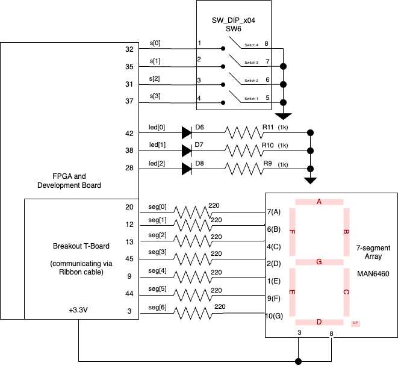

Lab 1 Writeup
Lab 1: FPGA and MCU Setup and Testing
Hours Spent: 21.3, Mapped with Toggl Track
Introduction: Hardware
The goal of this lab was initial setup and confirmation of FPGA control of on-board LEDs and attached GPIO pin. This was done through the control of three leds: D6, D7, and D8, as well as seven GPIO pins: 45, 3, 44, 9, 13, 12, and 20 through the readout of on-board 4-pin DIP switch. By the end of the laboratory, the three switches were controlled as defined as seen in Tables 1(a) and 1(b), and the seven segment LED matrix as defined in Table 2.
| s[3] | s[2] | led[1] |
|---|---|---|
| 0 | 0 | 0 |
| 0 | 1 | 0 |
| 1 | 0 | 0 |
| 1 | 1 | 1 |
| s[1] | s[0] | led[0] |
|---|---|---|
| 0 | 0 | 0 |
| 0 | 1 | 1 |
| 1 | 0 | 1 |
| 1 | 1 | 0 |
The logic tables that were used for the led to switch mapping. Table 1 (a) refers to s[3] and s[2]; on the board, these are switches 1 and 2 (pins P32 and P31 respectively) to match where the highest order digits would be in a four digit number. By extensino, Table 1 (b) uses the two right-most switches (P35 and P32)
| Switch Base 10 Value | Seven Segment Display |
|---|---|
| 0 | 0 |
| 1 | 1 |
| 2 | 2 |
| 3 | 3 |
| 4 | 4 |
| 5 | 5 |
| 6 | 6 |
| 7 | 7 |
| 8 | 8 |
| 9 | 9 |
| 10 | A |
| 11 | B |
| 12 | C |
| 13 | D |
| 14 | E |
| 15 | F |
The mapping from the decimal readout of the switches in hexadecimal.
Hardware Setup
The first stage of this lab involved the soldering of the MCU and the FPGA, as well as all additional SMD and THT pins. To do this, the E155 FA23 Development Board schematic was used. To begin, the SMD components were soldered. Careful consideration was given to make sure that the diodes were soldered in the right order and facing the correct direction. After these were soldered, THT components were then soldered, including the 4-pin DIP switch, the 8-pin DIP switch, and the female headers (Figure 1).
A board was connected via ribbon cable to the main Development board to allow for control of a breadboard via on-board GPIO pins (Figure 2). Once all pieces had been put together, the board was tested via a voltmeter via the screw terminal to ensure that the board could be properly powered (Figure 3)(Figure 4). The board through the screw terminal required +6 - +20 V; testing was done using 6V, and the board was confirmed to be running. The breadboard was tested using a multimeter to ensure that the 3.3V, 5.0V, and GND pins were properly generating the right voltage.
All soldered pins and the required impedance values and relevant pin numbers can be found in the E155 FA23 Development Board pdf, linked in “Other Links” on this page. Once confirmation was had that the board was properly powering all pins using the screw terminal, the transition was then made to powering the board using both the MCU and the FPGA individually via a micro-USB cable.
The final schematic for this design can be seen below.
Setup for Lab
I own a Mac computer, so I needed to go through a broad array of necessary preparation in order to begin generating the code for my computer. First, I installed SEGGER Embedded Studio 8.16a on my computer. Following the SEGGER Embedded Studio Tutorial, I confirmed that I was able to load designs onto my MCU board.
Unfortunately, because I don’t have a Windows, it was necessary to run to the laboratory and use an actual Windows computer in order to install J-Link. The only thing you need to download is the third link on the download links, specifically the one called “SEGGER STLinkReflash utility”. You shouldn’t need to install anything additional, since the supplied boards already had J-Link installed.
The FPGA proved to be a little more difficult. This was a multiple step process, and required a bit of troubleshooting.
First, I installed Parallels on my computer: I know that not everyone has $80 lined up to pay for a virtual Windows Machine. I recommend, if possible, use a student discount; when I got it, I managed to find a 50% student discount, which meant in the end I only spent $40. Parallels is one of the best ways to interact with your FPGA besides being in-lab, and I highly recommend it after using it for the past few days.
Once I had that downloaded, I installed Lattice Radiant for Windows 64 inside of the Parallels machine. In all, this process took me about two hours, so make sure to budget some time beforehand if you’re planning on doing this on a Mac. As noted by Professor Brake on his page explaining how to use Lattice Radiant, if you build a design within this program you won’t be able to run it like you would on a Windows, even if you are able to Synthesize the board. Instead, you need to go back to your home screen and find the correct pathing to the file on your Windows computer.
Not many people seem to know this, but if you have a folder or file open in your File Manager, you can drag the file into an open terminal window in order to get the complete file path; I’m sure there are other ways to do this, but this is the fastest way for me to open most programs.
Although you could run the same terminal code that Professor Brake advises, I personally have been using code given to my by Kavi Dey, which works better most of the time because I don’t need to figure out pathing to the .bin file on my computer. If you’re interested, follow this tutorial.
The Lab Itself
The lab is composed of three modules, one test bench, and one basic text file of test vectors. The modules are assumbled such that there is one for the combinational logic used for the LEDs called led_control.sv, and another that is used for the combinational logic of the seven segment array, called seven_segments.sv. The connection of these modules can be visualized in the block diagram below.

In this design approach, I noted that the led’s followed very basic boolean logic; LED 0 followed XOR logic with the lowest order two bits supplied by the DIP switch, and LED 1 followed AND logic with the two highest bits. LED 2 was very simple to program, as it followed similar logic to that used in the iCE_40.sv tutorial..
The design approach for the seven segment array required some more thoughtful setup. First, I constructed a table for each of the 16 possible arrangements of the DIP switch. Following the general logic that 0 should be mapped to 0x0, 1 to 0x1, etc. etc. until 15 was mapped to 0xF, I then created a table Table 3 that mapped out which parts of the segment would need to turn on to display the correct number. This gave me a list of seven bits arrange in 16 ways, which I then used inside a case statement when assigning according to the decimal value held by the DIP switch. Note that in the following table, segA was seg[0], or the least significant bit of the seven_segment array inside of the module; I initially had an issue debugging where I reversed the values on accident, and it created some odd shapes on the seven-segment matrix.
| s[3] | s[2] | s[2] | s[0] | 0x___ | segA | segB | segC | segD | segE | segF | segG |
|---|---|---|---|---|---|---|---|---|---|---|---|
| 0 | 0 | 0 | 0 | 0 | 0 | 0 | 0 | 0 | 0 | 0 | 1 |
| 0 | 0 | 0 | 1 | 1 | 1 | 0 | 0 | 1 | 1 | 1 | 1 |
| 0 | 0 | 1 | 0 | 2 | 0 | 0 | 1 | 0 | 0 | 1 | 0 |
| 0 | 0 | 1 | 1 | 3 | 0 | 0 | 0 | 0 | 1 | 1 | 0 |
| 0 | 1 | 0 | 0 | 4 | 1 | 0 | 0 | 1 | 1 | 0 | 0 |
| 0 | 1 | 0 | 1 | 5 | 0 | 1 | 0 | 0 | 1 | 0 | 0 |
| 0 | 1 | 1 | 0 | 6 | 0 | 1 | 0 | 0 | 0 | 0 | 0 |
| 0 | 1 | 1 | 1 | 7 | 0 | 0 | 0 | 1 | 1 | 1 | 1 |
| 1 | 0 | 0 | 0 | 8 | 0 | 0 | 0 | 0 | 0 | 0 | 0 |
| 1 | 0 | 0 | 1 | 9 | 0 | 0 | 0 | 0 | 1 | 0 | 0 |
| 1 | 0 | 1 | 0 | “A” | 0 | 0 | 0 | 1 | 0 | 0 | 0 |
| 1 | 0 | 1 | 1 | “b” | 1 | 1 | 0 | 0 | 0 | 0 | 0 |
| 1 | 1 | 0 | 0 | “C” | 0 | 1 | 1 | 0 | 0 | 0 | 1 |
| 1 | 1 | 0 | 1 | “d” | 1 | 0 | 0 | 0 | 0 | 1 | 0 |
| 1 | 1 | 1 | 0 | “E” | 0 | 1 | 1 | 0 | 0 | 0 | 0 |
| 1 | 1 | 1 | 1 | “F” | 0 | 1 | 1 | 1 | 0 | 0 | 0 |
In all, the combinational logic for this program was very straight forward. The next challenge came when mapping pins to the GPIO pins, and subsequent mapping to each individual segment on the matrix.
When attaching the seven segment display, I took care to note the design specifications. My board was a common-anode, single-seven segment display, which means that it was a MAN6460 on the data sheet. All segments had a test operating current of 20mA, and a dynamic resistance of 26 ohms when running. Additionally, I found that the average test voltage drop across was 2.1 V; I did not want to design for the maximum voltage scenario (which was 2.8 V), as I’d rather avoid getting too close to any risk of burning the matrix out. Considering that the current draw ought to be 20 mA, and that the voltage drop across a given segment is 2.1 V, I know that the resistors have to remove 1.2V at 20mA of current; when calculating according to the equation V/I = R, this means that the final resistance ought to be about 60 ohms. For the sake of safety and with confirmation from Kavi, I used 220 ohm resistors to connect each of the cathodes of the board to their relative pins, and supplied both of the common anode pins with 3.3 V from the GPIO board. This means that each segment, when powered, has a current of 1.2/220 ohms or about 5 mA of current, which would map to 0.5 relative luminosity on their supplied data sheet (Figure 5)
This leads to the question of why I didn’t put a single resistor at the common anode, and chose instead to use seven different ones. The answer to this lies within the design constraints; we want each of the segments to light up equal amounts every time. If the resistor came before the diode’s power drop, the current through each diode would vary as the number of diodes lighting up varied. A very simple example can be seen with the setup seen in Figure 6.
If we compare A and B, we can see how the current through the diodes will differ between each situation. In case A, the one that I used, if one diode isn’t lit up, it has no impact on the current traveling through the other diode: in every case, the voltage drop will assuredly be either 0V or 2.1 V across a given diode, irrelevant to any other segment within this case. However in case B, the same can not be said. If two diodes are lit up, they will be using double the amount of current, and resultantly the voltage drop caused by the single resistor will double. This means that there will be a smaller voltage drop across the diodes, which means that the more segments that are lit up, the less bright the matrix will glow - if it glows at all. This is why all of the resistors were attached to each cathode in the final design, rather than one resistor being connected to the common anode.
The FPGA board maps to all pins starting with P; the MCU maps to all pins starting with PA. In order to accomplish the correct mapping, I drew a diagram (Figure 7) that mapped the pin number, the segment controlled, and then the GPIO pin I intended for each part of the device. I knew that seg[0] was assigned to segA, seg[6] to segG, etc., and resultantly I was able to make a basic table that I then implemented on my breadboard (Table 4)
| segment number | GPIO Pin |
|---|---|
| 0 | P20 |
| 1 | P12 |
| 2 | P13 |
| 3 | P45 |
| 4 | P9 |
| 5 | P44 |
| 6 | P3 |
When writing a testbench, I ran into several problems with using test vectors, to the point where I initially just wanted to program a for-loop to check my results. However, I realized after multiple hours of debugging and talking with Kavi that I had saved the file as the wrong type of text file, and resultantly my code couldn’t find the file (not for lack of me putting the textfile in every place)
Because Windows doesn’t show the full extension, it wasn’t until I was looking through Windows via Terminal that I saw that the .tv file was, in fact, not a .tv file but a .tv.rtf file; this meant that when the program looked for the file that it wanted to run to test the vectors, it was unable to load it, even if the pathing to the text file was correct. Be very careful in Windows that the extension you see in the Finder window may not be the complete extension.
The final test bench that I made controlled the four bit input of the switches, and the cross checked the output of top with the values I knew ought to be in the led and seven segment array. The simulation takes a long time to run: I believe in order for it to complete all test vectors, I need to use the command run 1000000 (with six 0’s) in order to see the full thing and confirm that it is working. I removed $finish from the initial testbench file I was using as a baseline, as I wanted to be able to see the finished Waveform generator in Questa.
This final design meets all the requirements for this lab. The bits are arranged in increasing order, left to right, on the DIP switches, and correspond to the LED’s when everything is oriented the same way (i.e. the seven segment array is facing the correct direction, and the ribbon cable keeps everything close to the development board) without any twisting. Listing the requirements, and going over each one, we see that: 1. The development board is fully assembled and all its components are soldered. This was confirmed for the screw panel as well as the GPIO pins using a multimeter in lab. 2. There are three verilog modules written, one that serves at the top wrapper module, and two the serve to individually control the LEDs and control the 7-segment display 3. The FPGA has been programmed to run with this Verilog code. 4. The 7-segment display can display all sixteen hexadecimal digits from 0x0 through 0xF 5. All digits for the board are unique, with no repeats 6. The DIP switches are sequentially ordered, with P37 being the highest order and P32 the lowest. This is true for both the LED logic and the seven segment logic. 7. The LEDs display the specified logic operations properly. 8. I have provided calculations provided to demonstrate that the current draw for each segment in the seven-segment display is within recommended operating conditions, as 1.2V/220ohms = about 20 mA, which is within the device’s marked operating current. 9. I have generated a ModelSim (or specifically Questa) simulation with an automatic test bench that walks through each potential switch combination and ensures that the design is working properly. 10. Finally, I have performed the necessary calcualtions to ensure that all digits, specifically of the seven-segment array, are equally bright, regardless of the number of segments illuminated.
Suggestions for Future Improvements
Overall, this lab was a very good introduction for MicroP’s, and really gets the ball rolling so that the student can get back into the frame of mind they were accustomed to in E85. Overall, I think very few edits should be made to this laboratory. However, if I had to suggest a change, I believe the main one would be that the lab writeup should include, at some point, a reference to the MCU board, in case the lab user either skipped the section or forgot about it. In particular, since the MCU will be used in the future, it seems important that the user demonstrate that they know how to use it before it is used to a much greater degree further into the semester.
Additionally, a reference to an example of a block diagram within the References page would have aided in clearing up exactly what was expected to be seen in the first lab writeup, as I had many questions that needed to be answered in person, and couldn’t be found online.